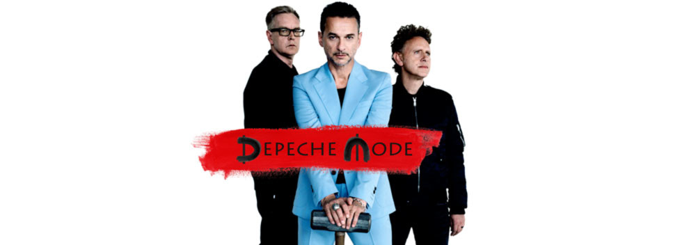
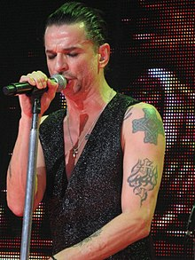
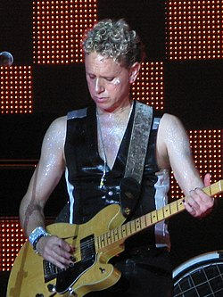
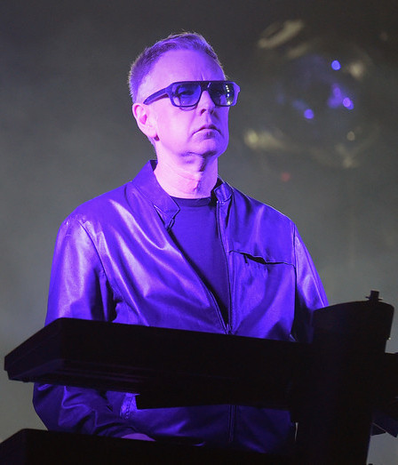
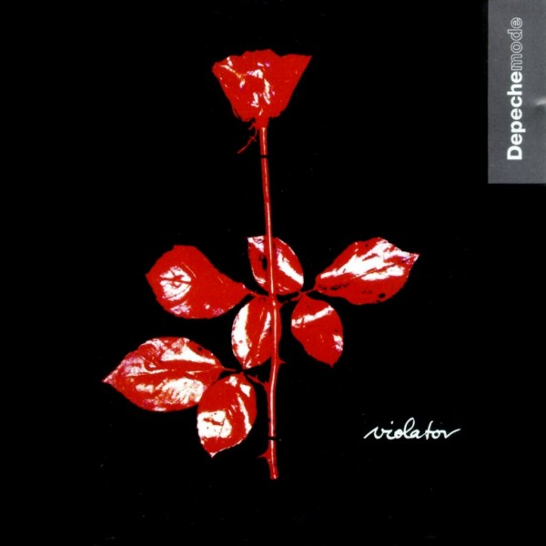

About Depeche Mode
This is Britain band which was formed in 1980. It has created its style in electronic, alternative and rock music, which influenced many-many singers and bands. What is more, it's one of the most successful and the longest-lasting band in the world! This band consists of trio:

←DAVE GAHAN is a frontman of Depeche Mode since 1980. He was one of the former of the band. Also he is co-songwriter and contributed to many Depeche Mode songs. Nowadays he is number 27 in the list of "100 best frontmen of all bands and times".
Gahan has contributed a number of songs to the albums Playing the Angel (2005), Sounds of the Universe (2009), Delta Machine (2013) and Spirit (2017). Four of these songs were released as singles, including "Suffer Well" in 2005, "Hole to Feed" in 2009, "Should Be Higher" in 2013, and "Cover Me" in 2017. He also has some solo songs and albums, distributed separetly from Depeche Mode.

→MARTIN LEE GORE is an English songwriter, keyboardist, guitarist, singer, record producer, remixer, and DJ. In Depeche Mode he usually plays a guitar or keyboard. What's more, we can't miss the fact, that Martin Gore is Main songwrtirer for Depeche Mode. He was even presented with an award by Daniel Miller for "International Achievement" by the British Academy of Songwriters, Composers and Authors.

←ANDY FLETCHER is a third member of Depeche Mode, popularly known as FLETCH". He is one of the founding memebrs of the band. Firstly he was a bass player, but then he turned to keyboard. Also he was responsible for band management for some time. In the studio and during live shows, Fletcher does contribute a variety of supporting synthesizer parts, including bass parts, pads, strings and drone sounds, and various samples.
Depeche Mode best album

Violator
Depeche Mode fans can disagree on a lot of things, that much is for sure, but I think the majority embraced Violator as the band’s creative peak. Even 27 years later it’s still an almost perfect masterpiece that balances light and dark, and gloomy introspection and forward pop tunes that somehow all work perfectly well together in that specific line-up. Following the big sound of Music For The Masses, Depeche Mode picked a more subtle and reduced setting, gave Gore’s sweet blues guitar a more prominent spot and even got a few techno vibes on board. Combine that with the perfect visual scenery created by Anton Corbijn and you get an example of how a profound pop record could actually look and sound like.
The best hits of this album are "Personal Jesus" and "Enjoy the Silence"